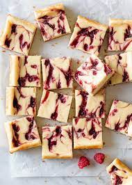

White Chocolate Raspberry Cheesecake Bars

Description
Made these for my girlfriends birthday, but definitely snuck a few for myself. Never made a regular cheesecake, but these were pretty simple to make and tasted amazing!.
Ingredient List
Raspberry Sauce
- 2 tsp room temp water divided
- 1 tsp cornstarch
- 1 1/2 cups fresh or frozen raspberries (don't thaw)
- 2 tbsp granulated sugar
Crust
- 22 white Oreos
- 5 tbsp melted salted butter
Filling
- 6 ounces of finely chopped white chocolate
- Full 16 oz full-fat cream cheese softened
- 1/3 cup granulated sugar
- 1 tbsp all-purpose flour
- 1 tsp lemon juice
- 1 tsp vanilla extract
- 1/8 tsp salt
- 2 large eggs
Steps
- Raspberry sauce must cool entirely before using it. So start cooking that by mixing 1 tsp
of water with the 1 tsp of cornstarch in a small cup or bowl and set to the side.
Combine the raspberries, granulated sugar, and the remaining water in a small sauce pan over medium heat. Stir as it begins to cook,
and breaking up the raspberries throughout. Once the mixture is simmering add the cornstarch mixture and keep stirring for a rough 3 minutes while continuing to break the raspberries up.
- After the 3 minutes remove from heat and press through a fine mesh strainer to remove the seeds. Place it in the freezer to cool quicker since it needs to be completely cooled.
- Preheat your oven to 350 degrees fahrenheit, and line the bottom and sides of a 9 inch pan with parchment paper with enough overhang to lift them out.
- Start making your crust by using either a food processor or blender to crush the Oreos into a fine crumb. You should have about 2 packed cups of them. Pour into a large mixing bowl and add the melted butter and stir it together. The mixture will be thick and wet, but try to break up any large chunks. Add the mixture to the sauce pan amd lightly pack it down making sure to evenly distribute it to make a thick crust. Bake for 8 minutes and you can probably start working on the next step as it is baking. When done, just leave in the pan and set aside. KEEP OVEN ON
- Start your filling by adding the chopped white chocolate in a double boiler. Can reuse the same saucepan if cleaned and a glass bowl or slap it in the microwave in a heat-proof bowl and melt in 20 second intervals if using the microwave and stir after to smooth it. When melted just remove from heat and set aside.
- Using a mixer with the paddle attachment beat together the cream cheese, and the granulated sugar in a bowl until it is smooth and creamy. Then add the flour, lemon juice, vanilla extract, and salt, then mix until fully combined. On medium speed add the eggs one at a time until just mixed. After the second egg is incorporated stop mixing. A few small lumps can remain. Then add in the melted white chocolate and beat on low until just combined.
- Next pour half the cheesecake filling over the crust (it is okay if it is still a little warm from baking),
and drizzle half of the raspberry sauce over the top. Then pour the remaining cheesecake filling in, then again the rest of the raspberry sauce and with a toothpick or knife make nice swirls to give it that aesthetic of hell yeah.
- Bake it all for 32-36 minutes or until the top looks set and the edges are slightly brown. Now it will be puffier, but as it cools it will sink slightly. Place on a wire rack for a rough 45 minutes to cool and then chill for at least 3 hours or overnight before slicing. If you want to chill them for longer just make sure to cover them with foil for overnight or more.
- To slice just lift out with the overhang of parchment and slice into squares or bars making sure to wipe the knife between each cut for a clean slice.